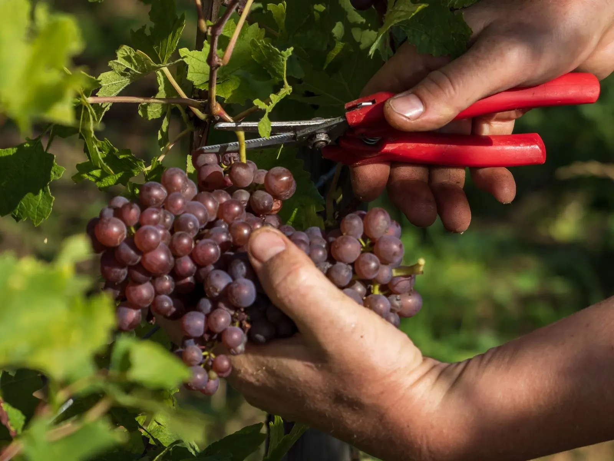
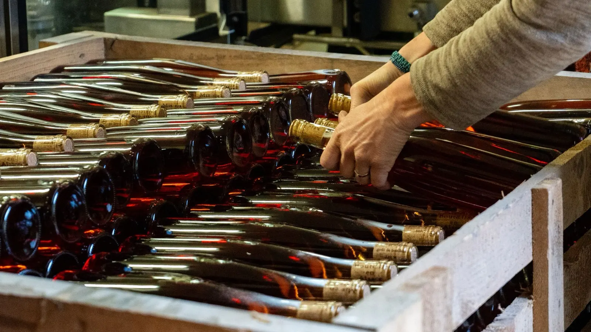
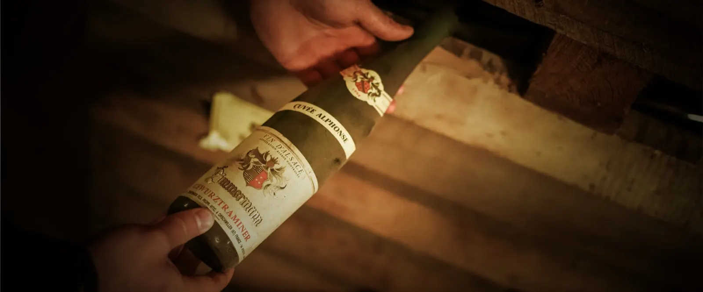
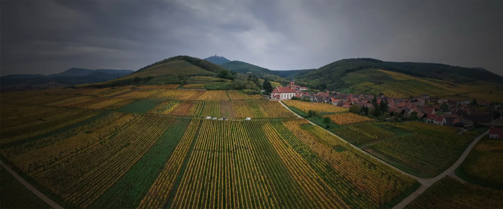
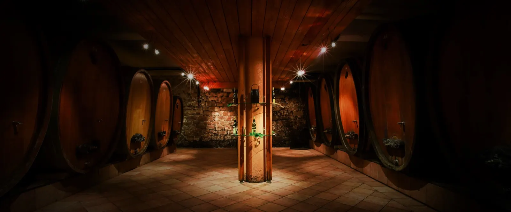
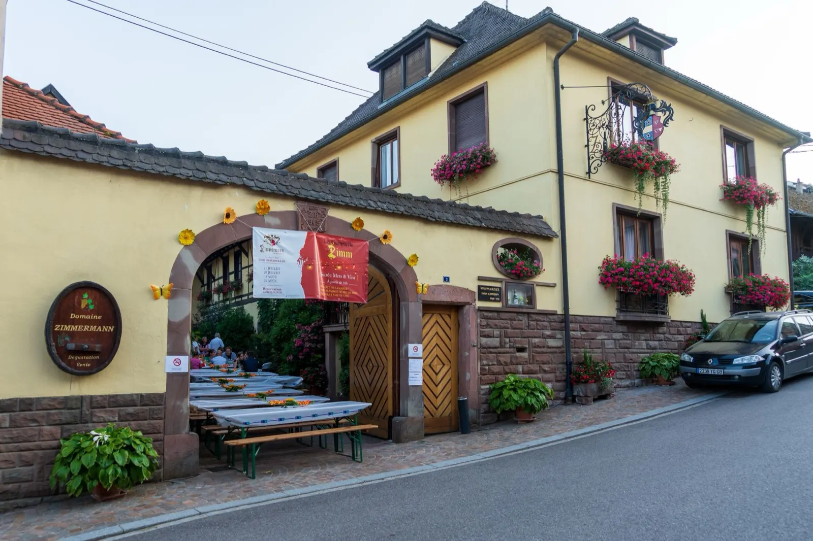

Praelatenberg Orschwiller, Alsace
Vigneron indépendant à Orschwiller
Près de 500 ans de vigne au pied du Haut-Koenigsbourg
Un domaine de tradition familiale, des vignes sur des terroirs argilo-granitiques, dont les Grands Crus Gloeckelberg et Praelatenberg, et un large choix de vins d'Alsace.
- 1548Premières traces de la famille dans les vignes
- 1693La maison et la cave bâties à Orschwiller
- 1946Membres fondateurs du Syndicat Viticole d'Orschwiller
- 2 Grands CrusGloeckelberg et Praelatenberg
Nos vins
La diversité des sols donne à nos vins la finesse soyeuse de l'argile, l'acidité et la minéralité du granit. Voici les cuvées de la boutique, à commander en ligne ou à retirer au domaine.
- Riesling Grand Cru Praelatenberg 2023Grand Cru20,00 €
- Gewurztraminer 202412,00 €
- Pinot Noir 202415,00 €
- Gewurztraminer Cuvée Alphonse 202118,00 €
- Pin'Aux 202225,00 €
- Muscat Vendanges Tardives 202225,00 €
- Gewurztraminer Vendanges Tardives 202230,00 €
Toute la gamme, par cépage :



Argile et granit, sous le château
Le domaine est niché au cœur d'Orschwiller, au pied du château du Haut-Koenigsbourg. Nos vignes profitent d'un climat constant et protecteur et s'épanouissent sur des terroirs argilo-granitiques, notamment les Grands Crus Gloeckelberg et Praelatenberg.
Cette diversité géologique donne à nos vins une palette d'arômes à part, entre la finesse soyeuse de l'argile et la minéralité caractéristique du granit.
Près de 500 ans d'une saga familiale
Un domaine transmis de génération en génération, entre traditions, pratiques séculaires et idées nouvelles.
- 1548
Les racines
Kilian Zimmermann signe le livre des comptes de l'Abbaye d'Ebersmunster pour les vignes du Meyerhoff et de l'Altenberg.
- 1693
Orschwiller
Le domaine bâtit la maison, puis la cave, là où elles sont encore.
- 1930
Les premières bouteilles
Une partie de la production est mise en bouteille.
- 1946
Le syndicat
Alphonse pose avec d'autres membres les fondations du Syndicat Viticole d'Orschwiller.
- 1976
Praelatenberg
Le domaine acquiert une parcelle de Grand Cru Praelatenberg.
- 2010
Gloeckelberg
Une parcelle sur le Grand Cru Gloeckelberg élargit la gamme des vins de terroir.
- 2019
Alexandre
Alexandre Zimmermann, fils de Vincent, rejoint l'entreprise familiale.


Où nous trouver
Le domaine est sur la Grand Rue d'Orschwiller, au pied du Haut-Koenigsbourg. Nos vins sont aussi chez 19 revendeurs, en Alsace et dans d'autres départements.
- Adresse
- 3, Grand Rue
67600 Orschwiller - Téléphone
- 03 88 92 08 49
- vins.fins.zimmermann@gmail.com
- En ligne
- La boutique, Instagram, Facebook
L'été, la cour du domaine accueille la Guinguette de Zimm : des soirées avec nos vins et de bons petits plats, sur réservation au 03 88 92 08 49 ou à contact@zimmermann.fr.